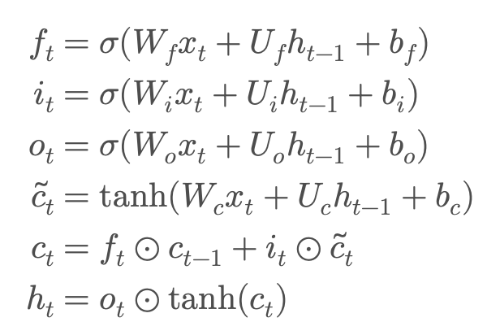
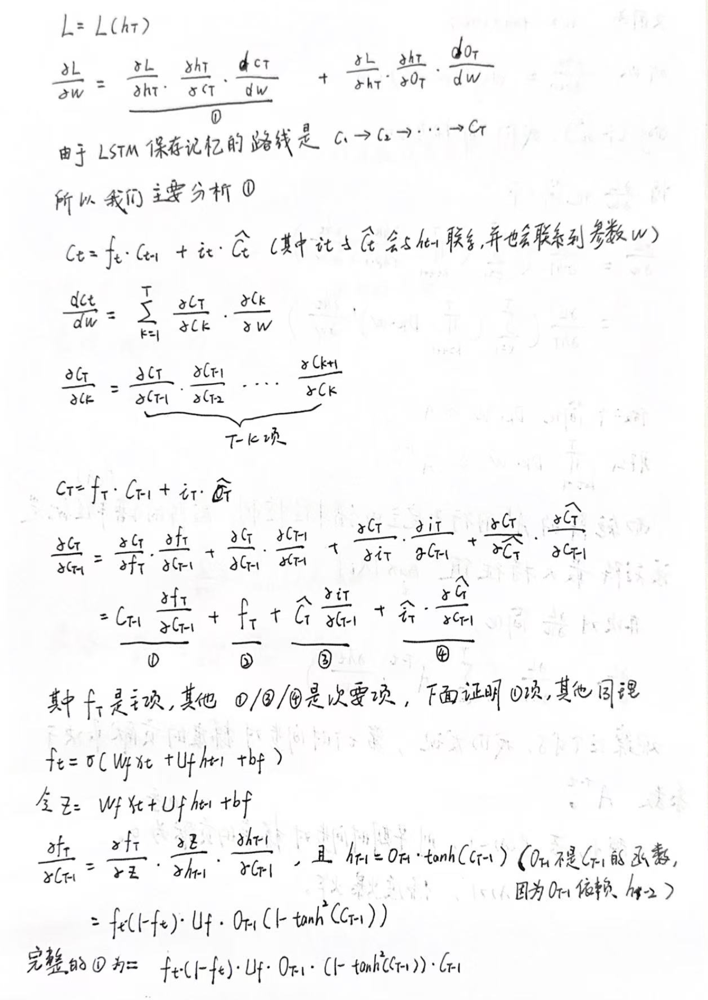
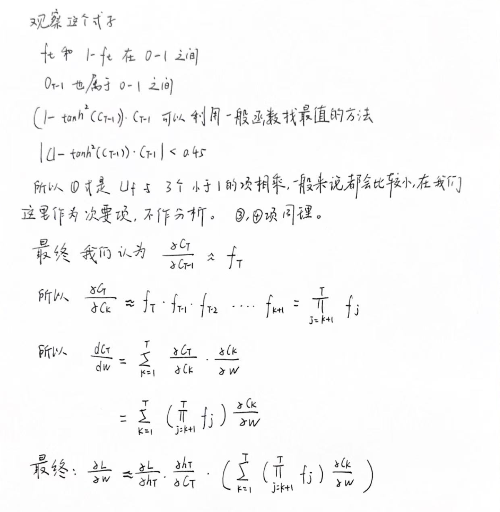

LSTM的梯度分析
Introduction
书接上回，在上一篇 Blog《RNN 梯度消失和梯度爆炸的解析》中，我们详细分析了 RNN 为什么容易发生梯度消失和梯度爆炸，并提到 LSTM 能够在一定程度上缓解这些问题。那么，LSTM 究竟是如何做到的呢？这篇 Blog 将会从数学推导的角度，详细分析 LSTM 为什么能够缓解梯度消失和梯度爆炸。
Background
Tanh and Sigmoid

解释一下，sigmoid的值域是(0,1)，用来做门控很合适，可以用来控制比例。
而 tanh 的值域是(-1,+1),可以用来表达一些内容丰富的东西。
为什么要说这些呢？诸君可以看看下面的各种门：f_t/i_t/o_t都是用的 sigmoid。
而涉及到中间的隐藏状态例如：c_t/h_t，使用的都是 tanh。
The update formula of LSTM

Mathematical derivation

在上一个讲解 RNN 的blog中，我们直接对 dh_t/d_w进行推导。
但是在图 3 中的推导中，我们并没有像 RNN 一样进行推导，因为c_t的更新公式中有f_t/i_t/c_t_bar/和上一个时间步的状态 c_t-1,都跟参数w有着联系，所以在这个 blog 的推导中，我们有一个 trick 就是：我们把复杂性都放到了 alpha_ck/alpha_w中了，从而简化我们的推导过程。

最终我们发现，与 RNN 相比，LSTM 的梯度更新公式中连乘的元素变成了遗忘门f_t,而遗忘门是数据驱动的，当任务需要长期记忆时，网络可以学习出与 1 很相近的f_t，使得 f_t的连乘下降的没有那么快，从而让梯度长距离传播；当历史信息不重要时，又可以学习出较小的 f_t，主动遗忘旧信息。
又因为 f_t是通过sigmoid计算出来的，而 sigmoid 的值域是(0-1),所以 LSTM 天然的能够避免梯度爆炸。
但是如果序列过长，连乘的f_t过多的话，早期时间步对于总梯度的贡献仍然不可避免的趋近于 0。
所以 LSTM 是 缓解(mitigate)梯度消失，而不是”消除(eliminate)梯度消失。
Last
于是，我们完成了从 RNN 到 LSTM 的更新换代。我们看到，无论是 RNN 还是 LSTM，它们都希望利用某个状态，例如隐藏状态（hidden state）或者细胞状态（cell state），去压缩并记录历史信息，再利用这个状态去预测未来。这当然是一种计算和存储都比较友好的方式。
我相信先贤们肯定也想过另一种思路：既然一个状态可能记不住所有历史信息，那为什么不保留每一个时间步的信息，在需要的时候再去计算它们之间的相关性（注意力机制，咱们这里就简单把它理解成一种“相关性”吧）。不过，RNN 和 LSTM 都诞生于比较早的年代（至少我还没出生😂），当时的研究背景、计算资源以及研究重点都与今天有所不同，因此最终选择了这种利用隐藏状态传递历史信息的方案。后来随着 Attention 机制和 Transformer 的提出，这种思路才逐渐成为主流。
以上纯属个人的一点感想，我并不是很了解机器学习的发展历史，嘿嘿嘿，侃大山而已啦。
Final Thoughts
每天进步一点点，坚持长期主义！！
其实我有时候在想，推导这些东西有用吗？
其实我没有答案。
但是在我高中的时候，我想买一个习题集，我那时候的想法也是，看这本书有用吗？
我爹说，管他有没有用，就当练字了。
yeah，所以我总是这样安慰自己，写这些就当练字了。